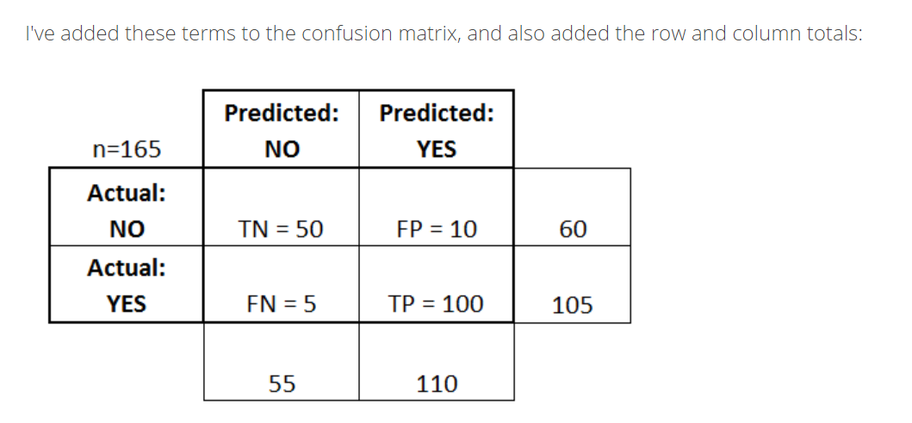
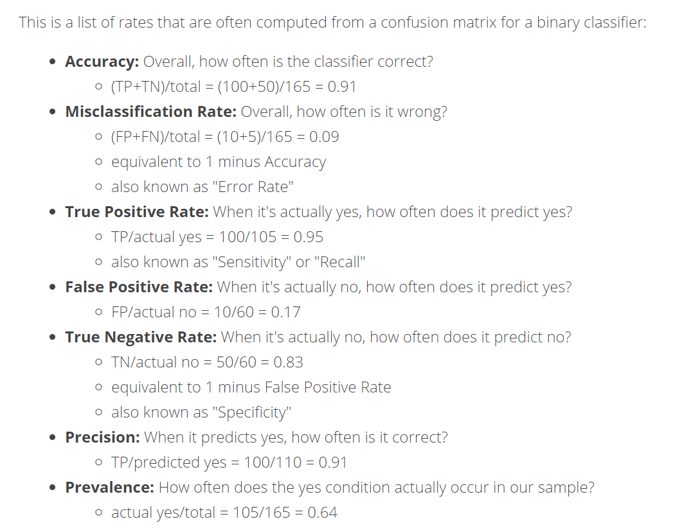

5. Logistics Regression¶
What is Logistics regression?
1)Used to predict the probability of an outcome.
2)Can be binary-Yes/No or multiple
3)Supervised Learning method
4)Must provide a dataset that already contains the outcomes to train the model.
For Logistic Regression, the outcome is categorical Example- Will this customer buy my product? Yes/No In other words, What is the probability of this customer buying this products?
Probability needs to satisfy two basic conditions-
1)Always positive
2)Always less than or equal to 1
Y=b0+b1X == Here, Y can be postive and negative. So we take exponential to both sides.
y=b0 + b1X ---For Always Postive---> e^y -----make it less than 1----> e^y/(e^y+1) ==Probability of Succcess(P)
So, Q=1-P (probability of faliure) == 1/(e^y+1)
Odds= P(success)/P(faliure) So after calculating this,
odd=e^y
So,
log(odd)= log(e^y) =y
After plotting odds
>0.5 == Success
<0.5 == Failure
Threshold value can be defined as per the business application
6. Loan Approval Prediction¶
Statement of the problem-
Automate loan eligibility process
Identify customers whose loan will be approved
We are supposed to predict whether approve the loan or not based on gendee, Maritial Status, Credit History, Income and Loan Amount.
Description of the columns of the data.
Gender- Gender has two value as Male and Female
Married- Maritial status of the customer. It has two value as Yes and No
Income- Total Income of the customers
Loan amount- Loan amount for the customer
Credit History- It is 1 beyond some value. 1-Yes 0-No
Status- Loan Status of the customer
Solutions Steps-
Import Library and read data
identify and deal with missing values
create dummy variables
Normalise the data
Select relevant columns
Split dataset in Training and test datasets
#Import Library
import pandas as pd
#Read the data and Create the copy
LoanData= pd.read_csv('01Exercise1.csv')
LoanData
| gender | married | ch | income | loanamt | status | |
|---|---|---|---|---|---|---|
| 0 | Male | No | 1.0 | 5849 | NaN | Y |
| 1 | Male | Yes | 1.0 | 4583 | 128.0 | N |
| 2 | Male | Yes | 1.0 | 3000 | 66.0 | Y |
| 3 | Male | Yes | 1.0 | 2583 | 120.0 | Y |
| 4 | Male | No | 1.0 | 6000 | 141.0 | Y |
| ... | ... | ... | ... | ... | ... | ... |
| 609 | Female | No | 1.0 | 2900 | 71.0 | Y |
| 610 | Male | Yes | 1.0 | 4106 | 40.0 | Y |
| 611 | Male | Yes | 1.0 | 8072 | 253.0 | Y |
| 612 | Male | Yes | 1.0 | 7583 | 187.0 | Y |
| 613 | Female | No | 0.0 | 4583 | 133.0 | N |
614 rows × 6 columns
LoanPrep=LoanData.copy()
#Identify the missing value
LoanPrep.isnull().sum()
gender 13
married 3
ch 50
income 0
loanamt 22
status 0
dtype: int64
#Drop the rows with missing value
LoanPrep=LoanPrep.dropna()
LoanPrep.isnull().sum()
We will drop the gender column because this column has no impact on Loan approval. We can not decide the loan approval based on gender column i.e. male or female.
#Drop the Gender Column
LoanPrep= LoanPrep.drop(['gender'],axis=1)
LoanPrep
| married | ch | income | loanamt | status | |
|---|---|---|---|---|---|
| 1 | Yes | 1.0 | 4583 | 128.0 | N |
| 2 | Yes | 1.0 | 3000 | 66.0 | Y |
| 3 | Yes | 1.0 | 2583 | 120.0 | Y |
| 4 | No | 1.0 | 6000 | 141.0 | Y |
| 5 | Yes | 1.0 | 5417 | 267.0 | Y |
| ... | ... | ... | ... | ... | ... |
| 609 | No | 1.0 | 2900 | 71.0 | Y |
| 610 | Yes | 1.0 | 4106 | 40.0 | Y |
| 611 | Yes | 1.0 | 8072 | 253.0 | Y |
| 612 | Yes | 1.0 | 7583 | 187.0 | Y |
| 613 | No | 0.0 | 4583 | 133.0 | N |
529 rows × 5 columns
#Create dummy variables
LoanPrep.dtypes
married object
ch float64
income int64
loanamt float64
status object
dtype: object
In order to apply get_dummies, ch should be in catogery format. We can change in the catogery format but we will not change because it has only two values as 0 and 1. It will not affect the model.
LoanPrep = pd.get_dummies(LoanPrep, drop_first=True)
#Normalise the data for loanamt and income using StandardScaler
from sklearn.preprocessing import StandardScaler
scaler_=StandardScaler()
LoanPrep['income']=scaler_.fit_transform(LoanPrep[['income']])
LoanPrep['loanamt']=scaler_.fit_transform(LoanPrep[['loanamt']])
LoanPrep
| ch | income | loanamt | married_Yes | status_Y | |
|---|---|---|---|---|---|
| 1 | 1.0 | -0.128073 | -0.194250 | 1 | 0 |
| 2 | 1.0 | -0.392077 | -0.971015 | 1 | 1 |
| 3 | 1.0 | -0.461621 | -0.294478 | 1 | 1 |
| 4 | 1.0 | 0.108246 | -0.031380 | 0 | 1 |
| 5 | 1.0 | 0.011017 | 1.547205 | 1 | 1 |
| ... | ... | ... | ... | ... | ... |
| 609 | 1.0 | -0.408754 | -0.908372 | 0 | 1 |
| 610 | 1.0 | -0.207624 | -1.296754 | 1 | 1 |
| 611 | 1.0 | 0.453802 | 1.371807 | 1 | 1 |
| 612 | 1.0 | 0.372249 | 0.544929 | 1 | 1 |
| 613 | 0.0 | -0.128073 | -0.131608 | 0 | 0 |
529 rows × 5 columns
#Build the Logistics Model
#Create the X (Independent) and Y (Dependent) dataframes
Y= LoanPrep[['status_Y']]
X= LoanPrep.drop(['status_Y'],axis=1)
#Split the X and Y datset into training and testing set
from sklearn.model_selection import train_test_split
X_train, X_test, Y_train, Y_test= train_test_split(X,Y, test_size=0.3,random_state=1234, stratify=Y)
#Bulid the logestic Regression model
from sklearn.linear_model import LogisticRegression
lr=LogisticRegression()
lr.fit(X_train,Y_train)
/opt/hostedtoolcache/Python/3.7.10/x64/lib/python3.7/site-packages/sklearn/utils/validation.py:63: DataConversionWarning: A column-vector y was passed when a 1d array was expected. Please change the shape of y to (n_samples, ), for example using ravel().
return f(*args, **kwargs)
LogisticRegression()
Y_predict=lr.predict(X_test)
Y_predict
array([0, 0, 1, 1, 1, 0, 1, 1, 0, 1, 1, 0, 1, 0, 0, 1, 1, 1, 1, 0, 1, 1,
1, 1, 1, 1, 1, 1, 1, 1, 0, 0, 1, 1, 1, 0, 1, 1, 0, 1, 1, 1, 1, 1,
0, 0, 1, 1, 1, 1, 0, 1, 0, 1, 1, 0, 1, 1, 1, 1, 1, 1, 1, 1, 1, 1,
1, 1, 1, 1, 1, 1, 1, 1, 1, 1, 1, 1, 1, 1, 0, 1, 1, 1, 1, 1, 1, 0,
1, 1, 1, 0, 0, 1, 1, 1, 1, 1, 1, 1, 0, 1, 0, 1, 1, 1, 1, 1, 1, 1,
1, 1, 1, 0, 1, 1, 0, 1, 1, 1, 1, 1, 1, 1, 1, 1, 0, 1, 1, 0, 1, 1,
1, 0, 0, 1, 1, 1, 1, 1, 1, 1, 1, 1, 1, 1, 0, 1, 1, 1, 1, 0, 1, 1,
1, 1, 1, 1, 1], dtype=uint8)
Y_test
| status_Y | |
|---|---|
| 373 | 0 |
| 464 | 0 |
| 3 | 1 |
| 262 | 0 |
| 401 | 0 |
| ... | ... |
| 360 | 0 |
| 71 | 1 |
| 96 | 1 |
| 388 | 1 |
| 270 | 1 |
159 rows × 1 columns
Confusion Metrix-A confusion matrix is a table that is often used to describe the performance of a classification model (or “classifier”) on a set of test data for which the true values are known. The confusion matrix itself is relatively simple to understand, but the related terminology can be confusing

Let’s start with an example confusion matrix for a binary classifier (though it can easily be extended to the case of more than two classes):


#Build the confussion matrix and get the accuracy/score
from sklearn.metrics import confusion_matrix
cm=confusion_matrix(Y_test,Y_predict)
cm
array([[ 29, 20],
[ 2, 108]])
score=lr.score(X_test,Y_test)
score
0.8616352201257862